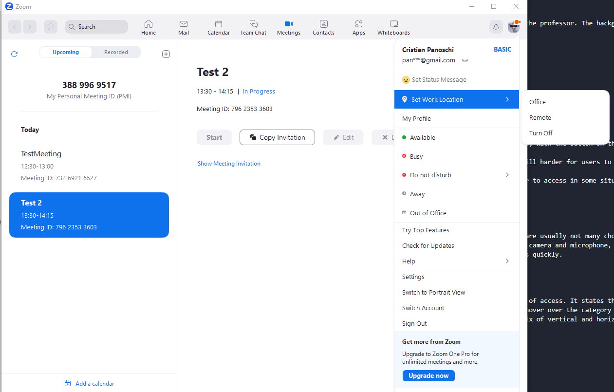
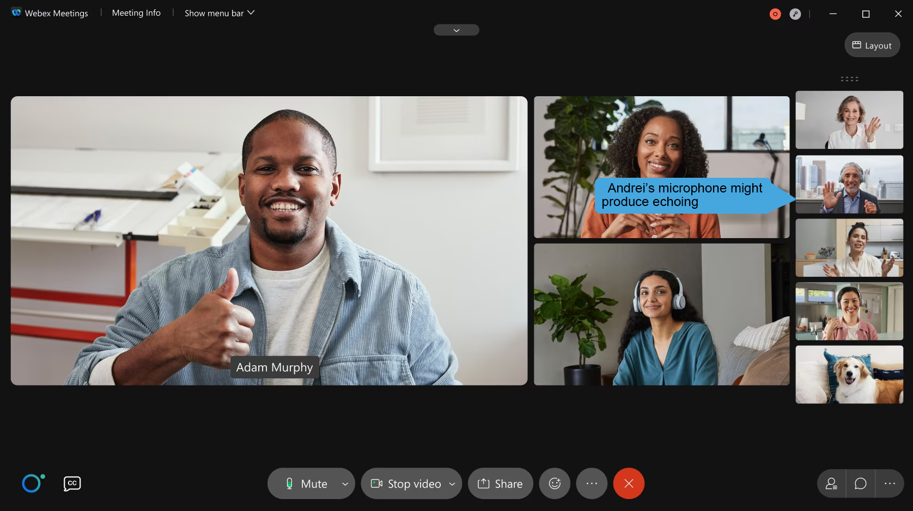

As happened during the latest years, sometimes a class needs to be held online due to all sorts of different reasons. In such a case, let us look into how a student would interact with the Zoom Meetings application to participate in said class.
The First step is to access the link the professor provided, which will take them to a web page that prompts them to open the Zoom Meetings Client, or install it if not available. There are also useful links on the page which inform the student about the Terms of Service and the Privacy Statement. They are highlighted in blue and reasonably visible on the bottom of the page.
There is, however, a detriment in not being able to join a meeting directly from the browser. Competitors like Microsoft Teams have this functionality and it facilitates the use of the application in a context where the user may be pressed for time and not be able to download the client application.
Once the client has been downloaded the student can join the meeting and participate. They are prompted to choose the audio device they want to use for both input and output, and then they have full access to the meeting. They can see shared screens or cameras, hear those with open microphones and so on.
The middle of the screen and most of the visual space is occupied by the thing that is currently being presented. If nothing is being presented, participants will be shown. During the meeting the student will be able to mute/unmute and start/stop their camera with ease by pressing the bottom left buttons. Next, from left to right there are buttons for managing the meeting(Security, only for host), managing participants, chatting with participants via text(private messages also), sharing their screen, recording the meeting, showing reactions that appear next to their icon, using apps from the Zoom app store and using a whiteboard to draw or plan things. The red button on the rightmost corner is for ending/leaving the meeting. The meeting view can be changed in the top right corner to fit the visual needs of the student.
The whiteboard can also be made interactable for all users for better efficiency. It is very useful to use in breakout rooms the teacher may make to coordinate with other students.
During the meeting they also have acess to a panel that showcases all sorts of different tool they can use.
In the middle of the panel are the controls for the meeting taking place, occupying almost a half of the visual space. These buttons are for quick access to the meeting window, joing a new meeting, scheduling a new meeting and sharing the screen during a meeting. To the right of these buttons is the information of the meeting taking place, or the one that is upcoming in the shortest time. The top of the panel window has other functionalities like mail, calendar, chat, meetings, contacts, whiteboards and even a sort of app store, as well as your profile and notifications. All of them are neatly organized and are represented by both text and a fitting icon.
Once the meeting is over, the student can leave and get on with their lives, or check to see if there is another meeting they have to attend in the calendar.
The application has a reccuring theme of pure white and a strong blue that can be found throughout the menus, sometimes showing a contrasting color like orange or a vibrant red or green to mark certain important buttons. Such is the case of the "Return to meeting"/"Join meeting" button in the Panel, the "Share screen option", and the end/leave meeting button. The screens have a soft feeling and are pleasant to look at, an important feature for an application that needs you to watch the same screen for a long time.
All the icons in the application are also matched with text for full clarity. Even so, they are also fitting for the concept they represent: shield for security, 2 people for participants, a rectangle with a pen for a whiteboard, a plus for new meetings etc. There are two instances of icons that are, in my oppinion, misleading: the meetings and the apps buttons.

The Meetings button looks like a camera, leading the user to belive it may be related to video settings, especially when during the meeting the same symbol can be found for opening/closing the camera. It would have been better to represent the meeting concept with some horizontal lines to represent the list of meetings shown when you click on the button. The apps button looks like two nodes connecting, which could lead some to believe it represents sharing something on social media; maybe the link or maybe the current whiteboard. The standard approach of a square with four circles inside it representing the way icons look in the app store would have been clearer.
For accessing the application via command line, in a text-based environment, the user could call a function with a parameter like "Zoom meeting_link" and then, once connected to the meeting, could identify themselves with a name and have access to the meeting chat. I do not see any feasible way of getting the live feed of Zoom via text. They could as well manage meetings and schedules and write on a whiteboard, each of these functionalities being implemented with a function like "calendar" or "whiteboard (new) text_to_write".
Things have been simple up until now, but let us take into consideration that there are a lot of students that may join the meeting; that can become a hard thing to manage for the professor, but for the student as well. When there are 50 cameras open and maybe even a shared screen and/or a whiteboard, plus the need to check the assignment the professor sent as text int the chat there is no more room on the screen for the student's eyes to rest and they end up with 3-5 different sections of screen that all need or catch attention.


There is also the possibility that some students sit in the same room (at the dorms for example) and they are required to have their microphones open at the request of the professor. The background noise, as well as them being heard from other student's device, can become a big problem because of echo and breaking the other participants's concentration.
Granted, Zoom has some ways to deal with this problem, like changing the settings in the view (top right during meeting), but much could be improved.
The chat on Zoom allows users to reply to eachother but it is pretty limited in this aspect. Let's consider the following case:

The reply button next to the "hi" message suggests that we can directly reply to that message. In reality this action will have an unexpected result: we reply to the first message of the thread:

To resove this issue we can simply allow users to reply to messages in a nested format which would create a visual hierarchy that makes it easier for users to follow the conversation and understand the context of each message. Here is an example of how that could look like:

Just like it was stated above, zoom is not easy to access from the browser. This is because even though the browser version exists you must know where to actually look for it and if you don't look for it and just click a zoom meeting link you might not even know that a browser version exists in the first place. Again, for reference this is the page that opens when we click on a zoom meeting link:

Not a single hint about a browser version of zoom!
The simplest solution to this is to add in the page an option for using the browser version of zoom:

Zoom has a feature for creating whiteboards that the host and other participants can use to draw or write on. This feature can be very useful in different scenarios, but it also has its drawbacks. One of them is that if everyone is allowed to draw on the whiteboard someone present in the meeting could take advantage of the fact that drawing is anonymous and the host cannot know for sure who drew what and could sabotage the whiteboard. Here is how the zoom whiteboard feature looks like:

In such a scenario it would be really useful to have a new whiteboard tool that could tell us who drew a certain drawing. Such a tool could also make use of a magnifying glass metaphor because we are using it to inspect something just like we would use it in real life:

Fitts's law says that the time to move to a target depends on how big it is and on how far away it is, so you should have big close by targets for the user to click on. On Zoom this principle is upheld by having window after window that opens up having the important buttons very close to the center of the screen. Even the meeting window, with the button on the bottom side, opens up in windowed mode, not in fullscreen, so that the row of buttons is close to the center. If there is an exception to this, however,it is the Panel window open separatelu, underneath the other one. It does have a "Back to meeting" center button, but it is still harder for users to go to the task bar and hit the other Zoom page, or press alt-tab, than having that menu somewhere close near the meeting window. On a phone screen it is even more difficult to manage meetings and menus due to the lack of screen space, but because of the same reason buttons are closer by and easier to access in some situations. For example, closing your microphone or camera on a smartphone is very easy and natural, but accessing chat is much more difficult.
Hick's Law (or the Hick-Hyman Law) states that the more stimuli (or choices) users face, the longer it will take them to make a decision. In the Zoom application there are usually not many choices given at the same time. The connection to the meeting is linear and during the meeting there are a few very distinct options to choose from, like sharing the screen, controlling camera and microphone, choosing which screen to watch and creating/joining a whiteboard. As the situation requires it, the user intictively knows which one to choose and, with enough experience, where to find these features quickly. The same stays true for other devices as well, from phone to tablet. There are not enough simmilar choices for the user to get lost in.
Steering's law, simmilar to Fitt's states that objects of interest should be bigger and closer to the likely position of the cursor/pointer of the user to maximize ease of access. It states that shorter, wider tunnels from cursor to point of interest require less time to navigate than longer, narrower tunnels. This can be applied to dropdown menus where the user has to hover over the category to see other sub-options. In Zoom, the tunnels are optimized by either requiring a click, which does not let them close on their own, or using a mix of vertical and horizontal tunnels like the ones in the profile management tab.
The dropdowns are few in number horizontally and wide enough to not pose a problem for the user. The same can be said about the phone menus as well, none of them being difficult to access.
The main affordances of Cisco Webex are hosting and attending virtual meetings. These meetings can be scheduled or impromptu and offer various tools for communication such as a chat, voice calls, video calls and screen sharing.
For this particular example, we will analyze the use case of hosting a meetup and a different user joining it. While meetings can be attended as a guest, without authentication, the same cannot be said about hosting a meeting. To host a meeting the user must first sign in/ sign up.
Let’s go to Webex.com to analyze the sign up process. To create an account: Click on the big white button ‘Sign Up, It’s free’.
Generally speaking, users have come to have certain expectations in regards the placement of the signing in / signing up. Generally these buttons are visible, and placed in the top right quadrant of the screen. Once this button is clicked the on boarding process begins. It is quite well known that the process of onboarding people as authenticated users is a significant bottleneck for most applications, as most people perceive the work required as not worth it. One thing of note throughout this process of creating an account is that Webex is trying ‘convince’ the user that the process is easy and streamlined, and requires only a minimal amount of effort from the users end. The work of signing up is split into bite sized chunks and displayed one at a time, likely to avoid overburdening the user. The 3 white lines that indicate the step are constantly in the center of the screen likely serve as a sort of finish line that the user can see getting closer to.
One thing of note here is the password requirements window. This gives the user a detailed breakdown of the security requirements, and constantly updates as they are fulfilled/unfulfilled. This prevents situation where the user has to input multiple passwords and be hit with multiple messages of ‘this password doesn’t meet requirement X’. Now that you are authenticated, you can host a meeting either by downloading the client or by using the browser:
The screen above is concise and uses easy to ready visual metaphors that most users will likely be very familiar with.
In browser dashboard:
Interestingly, the most important information is condensed to the left of the screen, and a significantly larger portion of the screen is reserved for not-as-important information. This left side serves as a navigation menu, while the right side displays information from the selected submenu.
Lets focus our attention on the left side of the screen:
The eyes of the user are naturally drawn the point of contrast on the start meeting button. In its vicinity, there are 2 more vital pieces of UI – the ‘My Personal Room Code:’ and ‘Schedule meeting.’ The unique ‘My Personal Room Code:’ can be used by other people to access the meeting, and is naturally a very important piece of information
Some new visual metaphors that appear on this page are:
By using the MyPersonalRoomCode, anyone can join the meeting, by pasting it into their browser. This will cause a popup to appear that tries to open the Webex application.
In order to join, it is not necessary to be an authenticated user. Instead you can join as a guest. Once the user has joined, this is the core of the Webex meetup GUI.
Some visual metaphors of note here are:
Command line interfaces tend to be less accessible then graphical user interfaces, and they tend to be used by people of a more technical background such as programmers.
It is important for commands in CLIs to be short and intuitive, and as much as possible work on what the user already knows. Since most users of command line interfaces are programmers, it would likely be advisable to use programming concepts as metaphors, such as class.attribute, get, set, do etc. Consider the scenario from the first segment, the use case of hosting a meeting. The CLI use case could go something like this: //user is not authenticated
User:>> startmeeting
Server:>>You must first sign in or sign up to run this command. Use sign_in or sign_up
User:>> sign_up
Server:>>[SIGNUP 1/3] input a valid email:
User:>>email_address
Server:>> [SIGNUP 2/3] A six digit code has been sent to your specified email. Please write it down:
User:>># # # # # #
Server:>>[SIGNUP 3/3] Input your: FirstName, LastName, PhoneNumber (optional=’-’), password (password security requirements)
User:>> first name, last name, -, password
Server:>> [SIGN UP COMPLETE] You can now login using sign_in
User:>>sign_in email password
User:get mprc
//gets the room code so it can be shared
User: startmeeting
Other parameters can also easily be inputted into these commands such as whether the meeting is encrypted, if the meeting can let users in without the host manually admitting them, max quality of the video feed etc. Ex:
User:>>startmeeting encrypted=’e2e’ auto_allow=’false’ max_quality=’480’
From personal experience, it would seem navigating the settings menus in order to remove the beep that is played when a user joins or leaves a meeting is quite unintuitive.
A solution to this would be to offer the user a kind of search box for options
The chat system provided by Webex lacks one major feature: deleting messages. Any user can write anything in chat and if a message is sent as a mistake or with malicious intent neither the sender nor the host can remove that message. Here is such an example:

What an awful message!
Adding a delete button next to the message solves our problem. A kick button can also be useful for the host to be able to remove an user with malicious intentions.

One of the drawbacks of the webex version in browser compared to its native application version is the imposibility to share multiple applications at once without sharing your whole screen. This feature would be useful for a bunch of reasons like privacy or sharing only relevant information. This is what choosing an application to share on the browser version of webex looks like:

Allowing users to share multiple applications at once from the browser interface could look like this:

The sorting of participants feature is quite limited: participants can be sorted by raised hands and name, but there are many more criteria that could be relevant and used by this feature and could give the hosts some insights.
Sorting participants:

Some of the criterias that could be added are the shared screen time, the microphone open time or the chat activity such that the host could use those to have an idea about how active are the participants compared to eachother. Other useful criterias could include the join time of participants in the meeting, for example to give priority of presentation to the people who have waited the most, or the number of atendances in previous meetings. The host could also take into account the network quality of the people in the meeting when choosing who to talk with next.

*Fritt’s Law refers to the time it takes to point at a target on a computer screen. It states that the time it takes to move a pointing device(a mouse) to a target is a function of the target’s size and the starting distance. In other words, the larger and closer a target is, the easier it is to reach.
*Hick’s Law refers to the fact that the amount of time required for a person to make a decision increases with the possible amount of choices. In other words, the more options there are, the harder it is to decide.
*Steerig’s Law refers to the time it takes to steer a moving object such as a cursor through a series of targets. The less targets there are and the wider they are, the less time will be required.
One common problem with meetings on platforms like Zoom and Webex is the fact that many users will enter the meeting and leave their devices to appear online while doing other activities. One way to keep track of who is actually in front of their device and not away for most of the meeting could be to implement a check that occurs at some time intervals. For example every n minutes soap bubbles could start floating in front of the interface and present users could click them to burst them, using the metaphor of bursting soap bubbles in real life. This way they also can prove their presence in front of their device without the need to have their cameras open for the entire meeting.
With the start of the pandemic many classes moved to online meetings. It makes sense to accommodate teachers with features like online catalogues directly accesible from the Zoom / Webex interface. Here teachers can add grades to students and check automatically generated statistics about.
It often happens in online meetings that some audio feedback or "echo" appears because an user has the microphone too close to the speakers. To find the cause of such problems easier it would be useful to have an auto-detection feature that can highlight the source of the "echo".
At the end of the meeting, the host could prompt users to provide feedback and ratings on various pre-selected criteria using a star system. This anonymous feedback would be specific to the meeting session that the users participated in.
Platforms like Webex and Zoom are often used for colaboration. Being able to share your screen is a step in the right direction, but it would be even better if you could allow the host to actually interact with your pc via a share screen + feature, similarly to remote access applications such as teamviewer.

Many users have recurring meetings at fixed times so it makes sense to have a feature that lets you schedule when you want your favorite communication app to automatically startup and be ready for you to join your meeting.